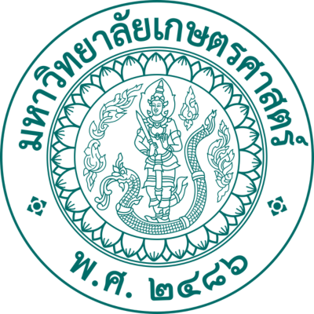
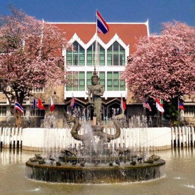

Kasetsart University


Kasetsart University, established in 1943 in Bangkok, is one of Thailand’s leading public universities and the country’s first institution dedicated to agricultural studies. Over the years, it has expanded into a comprehensive university offering programs in science, engineering, business, social sciences, humanities, and more, while still maintaining its strong foundation in agriculture and environmental studies. Renowned for its research, innovation, and commitment to sustainable development, Kasetsart University plays a vital role in advancing Thailand’s progress and continues to produce graduates who contribute significantly at both national and international levels.